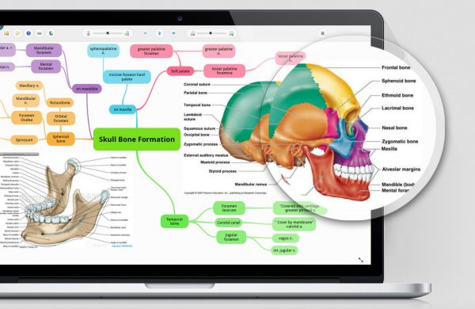

Share This:
Writer:
Gloria Kopp
4 Study Tools to Make Studying both Easier and More Effective

It’s that time again. Students all over the country are getting ready to either start a university, or head back after a relaxing summer.
Are you worried about getting back to work? These twelve tools will help you get back into the swing of things.
If you’re a visual learner, this is the tool for you. It helps you break down information into smaller chunks, meaning they’re much easier to digest. It also has a range of tools including a note taking platform, online flashcards, and collaboration tools.
This site holds hundreds of resources on almost any subject imaginable. They’ll help you understand a topic when you’re feeling somewhat lost. The great thing is that they’re all free, too.
Ever had that moment where you’ve lost a notebook with all of your class notes in, or had a laptop blow up? Evernote avoids the issue of losing your notes for good. These tools allow you take notes on your laptop or tablet, and save them to the cloud. You’ll never lose them again. You can access notes between devices too, so you don’t have to worry about losing them if you replace your current device.
If you’re looking to improve your writing skills, this is the place to go. It has a series of writing tools designed with students in mind. There’s proofreading technology, a grammar guide, writing activities, and more.